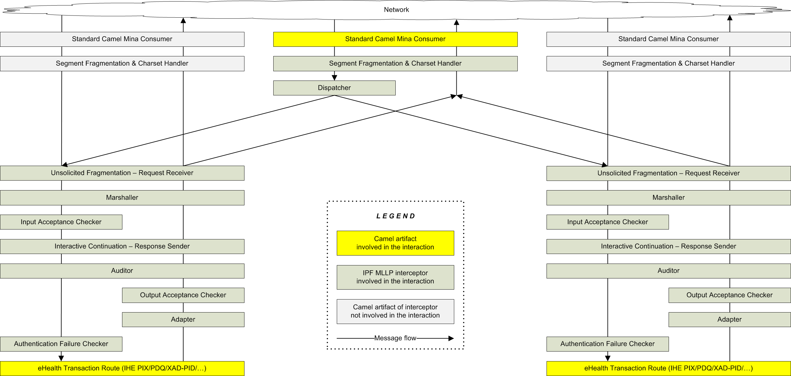

mllp-dispatch component
The MLLP dispatcher allows to reuse a single TCP port for serving multiple MLLP-based transactions. This may be useful e.g. when a client application cannot be configured to use different ports for different transactions, or when firewall rules are too restrictive.
Actors
Only consumer side is supported. There is no mapping to a particular actor.
Dependencies
In a Maven-based environment, the following dependency must be registered in pom.xml:
<dependency>
<groupId>org.openehealth.ipf.platform-camel</groupId>
<artifactId>ipf-platform-camel-ihe-mllp</artifactId>
<version>${ipf-version}</version>
</dependency>
Endpoint URI Format
The endpoint URI format of the mllp-dispatch component is the following:
"mllp-dispatch://hostname:port?routes=id1,id2,...&otherParameters"
where hostname is either an IP address or a domain name, and port is a number. For the consumer side, the host name 0.0.0.0 allows the access from any remote host. These two obligatory URI parts represent the address of the MLLP dispatcher endpoint which is to be served by the given consumer.
The URI parameter routes is optional and contains a comma-separated list of route IDs. Each referenced route must be a consumer route of an IPF MLLP component.
You can also choose to omit the routes parameter and instead provide a parameter referencing a bean of type org.openehealth.ipf.platform.camel.ihe.mllp.core.intercept.consumer.ConsumerDispatchingInterceptor to both the dispatcher endpoint and the transaction endpoints.
Behavior
The dispatching mechanism leverages the MLLP interceptor machinery. The dispatcher takes over network communication and, optionally, segment defragmentation, and then simply feeds the exchange to the appropriate transaction-specific interceptor chain, as shown on the figure below:

Note that the transaction-specific routes served by the dispatcher still remain usable in the stand-alone mode, but their endpoints are not required to be accessible from the outside and thus can be bound e.g. to localhost, as shown in the examples below.
Example with explicit route IDs
void configure() throws Exception {
// Camel does not allow empty routes, therefore a dummy processor
// is required after from(...). This processor will be in fact never
// executed; it means, even .throwException(...) would be Ok here.
from('mllp-dispatch://0.0.0.0:18500?routes=pixfeed,xadpid').process {}
from('pix-iti8://localhost:18501')
.routeId('pixfeed')
.....
from('xpid-iti64://localhost:18502')
.routeId('xadpid')
.....
}
Example without explicit route IDs
void configure() throws Exception {
// Camel does not allow empty routes, therefore a dummy processor
// is required after from(...). This processor will be in fact never
// executed; it means, even .throwException(...) would be Ok here.
from('mllp-dispatch://0.0.0.0:18500?dispatcher=#dispatcher').process {}
from('pix-iti8://localhost:18501?dispatcher=#dispatcher')
.routeId('pixfeed') // recommended, but not required
.....
from('xpid-iti64://localhost:18502?dispatcher=#dispatcher')
.routeId('xadpid') // recommended, but not required
.....
}
The dispatcher bean must be defined as follows:
<bean id="dispatcher" class="org.openehealth.ipf.platform.camel.ihe.mllp.core.intercept.consumer.ConsumerDispatchingInterceptor">
<constructor-arg index="0" ref="camelContext"/>
</bean>
In this case, upon Camel Context initialization the dispatcher bean is dynamically configured with the IDs of all routes whose MLLP transaction consumers reference the same dispatcher bean instance. This procedure is less error-prone because you don’t have to configure route IDs anymore, however, there will be no defined order in which the dispatcher endpoint offers the message to the routes.
Basic MLLP Component Features
Advanced MLLP Component Features
Other features like audit trail, interactive response continuation, and unsolicited request fragmentation, are to be configured in the transaction-specific routes served by the given MLLP dispatcher.